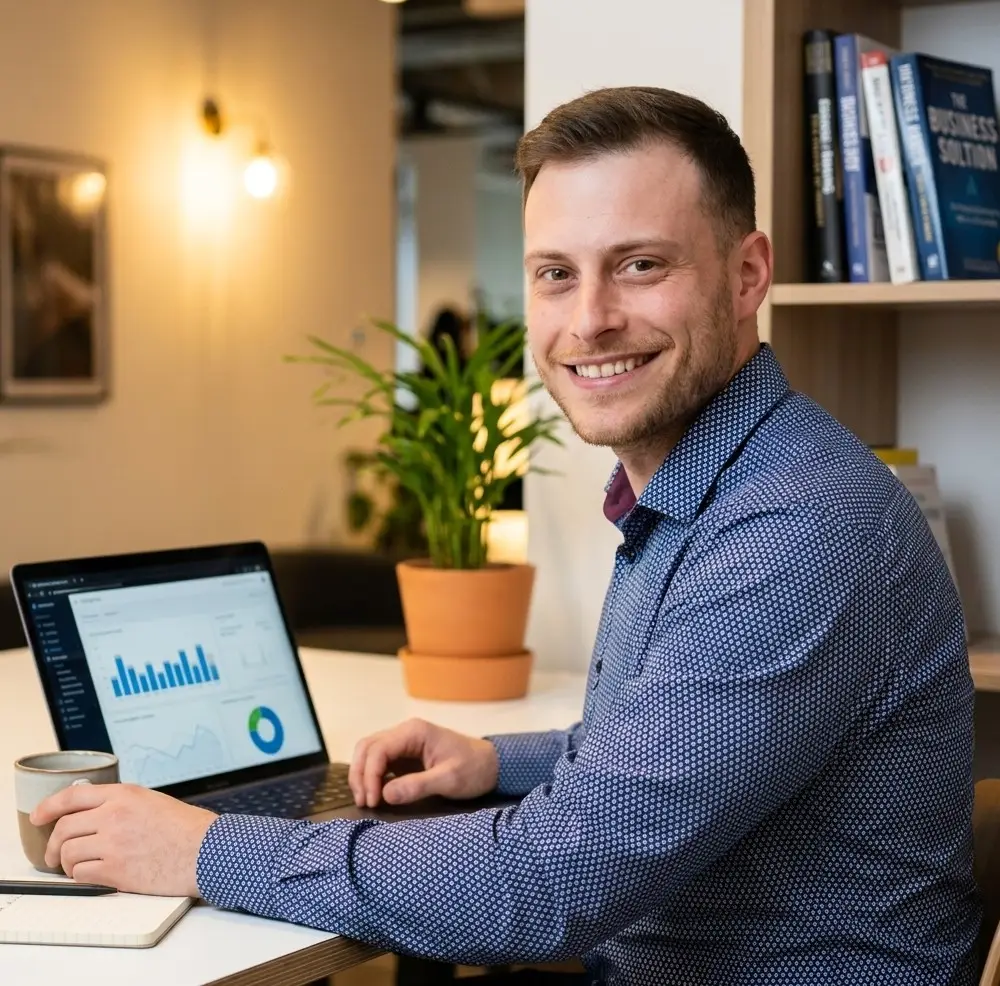

PPC specialista pro e-shopy a B2B
Břeclav, Brno a celá ČR
Nepomáhám vám s reklamou. Pomáhám vám růst.
Google Ads · Sklik · Meta Ads · LinkedIn Ads · YouTube · Bing Ads · ChatGPT Ads · zbožové srovnávače
Spravuji Google Ads, Sklik, Meta Ads a produktové feedy pro e-shopy a B2B firmy. Přes 250 milionů Kč proinvestovaných v kampaních, průměrný ROAS 4,3. Všechny kanály vedu jako jednu strategii, ne jako čtyři oddělené účty.

Digitální marketing, který dává smysl
Pavel Vognárek je PPC specialista a Google Ads konzultant z Velkých Bílovic u Břeclavi. Spravuje Google Ads včetně YouTube, Sklik, Meta Ads, LinkedIn Ads, Microsoft Ads (Bing), reklamu v ChatGPT a produktové feedy pro e-shopy a B2B firmy z Česka i ze Slovenska. V kampaních proinvestoval přes 250 milionů Kč s průměrným ROAS 4,3.
Jsem Pavel Vognárek, PPC specialista a Google Ads konzultant z Velkých Bílovic u Břeclavi s praxí, za kterou stojí přes 250 milionů Kč investovaných do reklamních kampaní. Zkušenosti jsem sbíral v brněnských agenturách: jako Team Leader PPC v In Creative a jako konzultant v ROIMARK.
Moje práce není jen o spouštění reklam. Je to o pochopení businessu, správném čtení dat a strategickém myšlení, které přináší reálné výsledky, ne jen hezké reporty. Pracuji s klienty z Břeclavi, Brna, celé jižní Moravy (Hodonín, Mikulov, Znojmo, Kyjov) i z Prahy a online po celé ČR.
S kým spolupracuji
Zkušenosti sbírám v brněnských agenturách i v přímé spolupráci s klienty. Tady je výběr značek, na kterých jsem pracoval.
Agenturní spolupráce
Agenturní spolupráce mi dává velmi široký přesah pro můj rozvoj i rozvoj klientů.
Vybrané značky, na kterých jsem pracoval:


 Team Leader PPC
Team Leader PPC
Vybrané značky, na kterých jsem pracoval:


Přímí klienti
Mimo agenturní spolupráci, jako konzultant

Moje největší úspěchy
Veřejně publikované výsledky a oceněníCo dnes klienty trápí nejvíc
Tyhle problémy slýchám od klientů každý den. Pokud se v některém poznáváte, pojďme si popovídat.
Utrácíme víc, ale nerosteme
Rostoucí CPC, klesající ROAS. Bez správné strategie a brandingu performance kampaně přestávají fungovat.
Tohle řeším →Nevíme, co nám vlastně funguje
iOS změny, cookie lišty, nejasná atribuce. Data nesedí a vy nevíte, kam investovat.
Tohle řeším →Závislost na jednom kanálu
80 % obratu z Mety nebo Googlu. Jakmile jeden kanál zakolísá, zakolísá celý business.
Tohle řeším →Slabý brand vs. výkon
Lidi vaši značku neznají, proto nekonvertují. Výkon bez brandu má svůj strop.
Tohle řeším →Agentura řeší jen PPC
Kampaně jedou, ale nikdo neřeší celek. Výsledkem je nepropojený marketing bez směru.
Tohle řeším →Služby
Kompletní správa výkonnostního marketingu: Google Ads včetně YouTube, Sklik, Meta Ads, LinkedIn Ads, Microsoft Ads (Bing), reklama v ChatGPT a zbožové srovnávače včetně produktových feedů. Pro e-shopy i B2B firmy z Česka i ze Slovenska, od auditu a strategie po každodenní optimalizaci a měsíční reporting.
Hlavní kanály pod jednou střechou: Google Ads, Sklik, Meta Ads a zbožové srovnávače, pro B2B i LinkedIn Ads. K nim Microsoft Ads (Bing), YouTube a reklama v ChatGPT.
Správa Google Ads a Sklik
Search, Shopping a Performance Max pro e-shopy a B2B. Struktura kampaní, klíčová slova, bidding strategie a měření konverzí v GA4. Od první strategie po každodenní optimalizaci.
Více o správě Google Ads →Správa Meta Ads a škálování výkonu
Facebook a Instagram jako rovnocenný kanál, ne přívěsek k Googlu. Katalogové a remarketingové kampaně, prospecting, obměna kreativy a měření přes Conversions API. Škálování podle incrementality, ne podle nafouknutých atribucí.
Více o správě Meta Ads →PPC pro B2B a LinkedIn Ads
Google Ads na poptávky, LinkedIn Ads s cílením podle oboru a pozice a lead formuláře v Metě. Vyhodnocení podle kvalifikovaných poptávek až do CRM, ne podle počtu vyplněných formulářů.
Více o PPC pro B2B →Zbožové srovnávače a produktové feedy
Google Merchant Center, Heureka, Zboží.cz, Favi, Biano, katalog v Metě. Kvalita dat, názvy produktů podle reálných dotazů, chybějící atributy a pravidla v Mergadu. Čistý feed znamená nižší CPC a vyšší ROAS.
Více o PPC pro e-shopy →Audit PPC a optimalizace ROAS
Detailní audit účtu, měření a feedu. Odhalím, kde se utrácí zbytečně a kde leží potenciál růstu. Výstupem je konkrétní plán, ne seznam obecných doporučení.
Více o auditu PPC →Black Friday a sezónní kampaně
Příprava strategie na Black Friday, Vánoce a sezónní špičky napříč Googlem, Sklikem, Metou i srovnávači. Reálné zkušenosti, vítěz Sklik výzvy Black Friday 2025.
Výsledky měřím na objednávkách, ne v reklamním systému
V dashboardu se potkají skutečné objednávky z e-shopu s náklady ze všech reklamních účtů, data jsou průběžně aktualizovaná. PNO počítám z tržeb bez DPH a bez dopravy, takže si ho Google ani Meta nemůžou přikrášlit. Podle toho se rozhoduje, kam přidat rozpočet a kde ubrat.
Zobrazit data v tabulce
| Den | Objednávky | PNO |
|---|---|---|
| 1. 9. | 8 | 16,9 % |
| 2. 9. | 1 | 317,5 % |
| 3. 9. | 8 | 13,0 % |
| 4. 9. | 5 | 28,5 % |
| 5. 9. | 3 | 83,9 % |
| 6. 9. | 9 | 19,1 % |
| 7. 9. | 11 | 31,2 % |
| 8. 9. | 14 | 13,8 % |
| 9. 9. | 16 | 10,1 % |
| 10. 9. | 23 | 15,0 % |
| 11. 9. | 16 | 30,6 % |
| 12. 9. | 6 | 43,0 % |
| 13. 9. | 9 | 19,2 % |
| 14. 9. | 12 | 14,5 % |
| 15. 9. | 15 | 12,9 % |
| 16. 9. | 28 | 11,4 % |
| 17. 9. | 82 | 6,5 % |
| 18. 9. | 100 | 8,0 % |
| 19. 9. | 43 | 14,8 % |
| 20. 9. | 54 | 15,5 % |
| 21. 9. | 69 | 13,0 % |
| 22. 9. | 65 | 13,4 % |
| 23. 9. | 75 | 14,2 % |
| 24. 9. | 80 | 13,1 % |
| 25. 9. | 90 | 13,1 % |
| 26. 9. | 15 | 19,3 % |
| 27. 9. | 9 | 43,3 % |
| 28. 9. | 11 | 24,8 % |
| 29. 9. | 12 | 21,2 % |
| 30. 9. | 11 | 21,4 % |
Skutečná data z klientského dashboardu. Jméno e-shopu a částky v korunách nezveřejňuji, počty objednávek a PNO jsou přesně tak, jak je dashboard ukazuje.
Jak přesně vyhodnocuji →Přístup, který dělá rozdíl
Čtyři kanály, jedna strategie
Google Ads, Sklik, Meta Ads a zbožové srovnávače vedu společně, ne jako čtyři oddělené účty. Díky tomu se pozná, kdy si dva kanály přiznávají stejnou objednávku, a rozpočet se nerozhoduje podle nafouknutých čísel.
Transparentní komunikace
Přístup do účtů zůstává váš, reporty chodí měsíčně a u každé změny se dozvíte, proč se udělala a co přinesla. Komunikace přes Google Meet, e-mail a sdílené dashboardy. Žádný black box.
Ověřitelné výsledky
Přes 250 milionů Kč proinvestovaných v kampaních, průměrný ROAS 4,3, vítězství ve Sklik výzvě Black Friday 2025 a případová studie na Sklik Akademii. Obojí si můžete ověřit u zdroje, odkazy najdete v referencích.
Optimalizace na zisk, ne na obrat
Než se sáhne na kampaně, musí sedět měření: konverze v GA4, Conversions API v Metě a čistý produktový feed. Pak se ptám na marži a hodnotu zákazníka, protože ROAS bez marže je jen hezké číslo do reportu.
Nejčastější otázky
Co všechno je součástí správy Google Ads?
Spravujete i Meta Ads, tedy reklamu na Facebooku a Instagramu?
Jak se dá na Meta Ads škálovat výkon, když se kampaň zasekne?
Kolik stojí správa PPC kampaní?
Jak probíhá spolupráce s PPC konzultantem?
Jak dlouho trvá, než se PPC kampaň rozjede?
Převezmete existující účet, nebo stavíte kampaně od nuly?
Spravujete i Sklik, nebo jen Google Ads?
Spravujete i LinkedIn Ads, Microsoft Ads (Bing), YouTube a reklamu v ChatGPT?
Pracujete i s produktovými feedy pro Google Shopping, Heureku a Zboží.cz?
Pro jaké klienty se spolupráce hodí?
Proč mi nefungují kampaně?
Proč mi klesá ROAS?
Jak poznám, že mi PPC agentura nefunguje?
Jak poznám dobrou agenturu nebo konzultanta?
Kolik mám investovat do marketingu?
Pracujete i s klienty z Břeclavi a okolí?
Pokrýváte jen jižní Moravu, nebo i zbytek Česka?
Spolupracujete i se slovenskými e-shopy a firmami?
Jak probíhá spolupráce, když nejsem z Břeclavska ani Brna?
Pojďme to rozebrat
Domluvte si nezávaznou konzultaci a zjistěte, co vám skutečně brání v růstu.
Nevíte, jak to popsat? Projděte krátkou diagnostiku, zabere asi dvě minuty.
